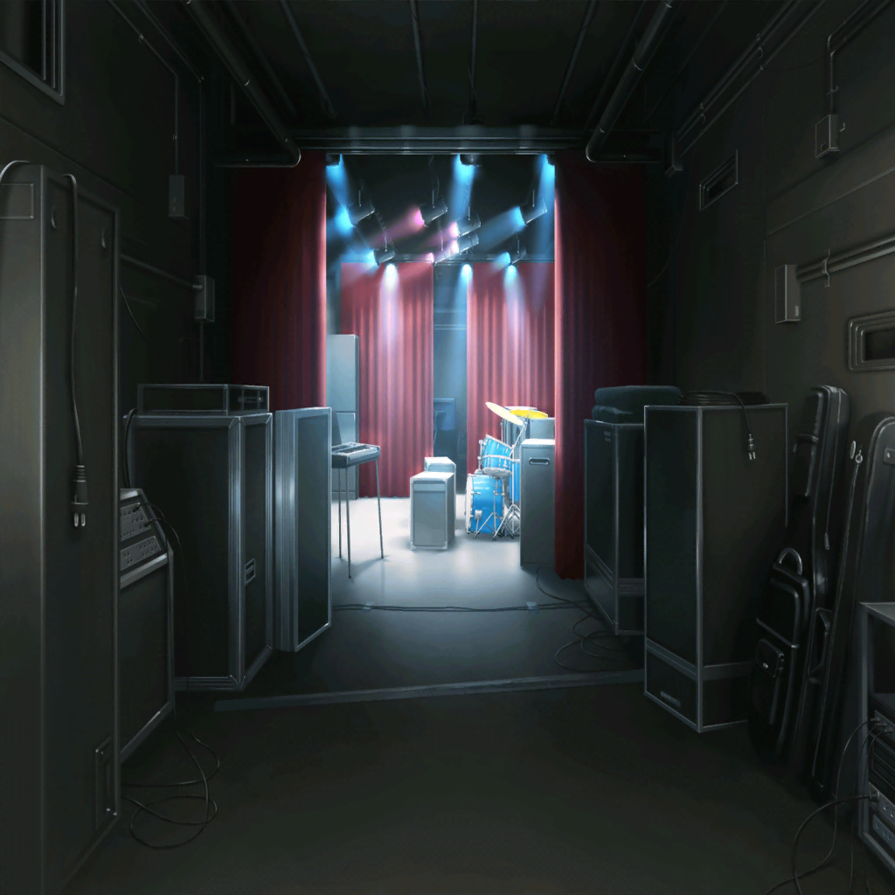
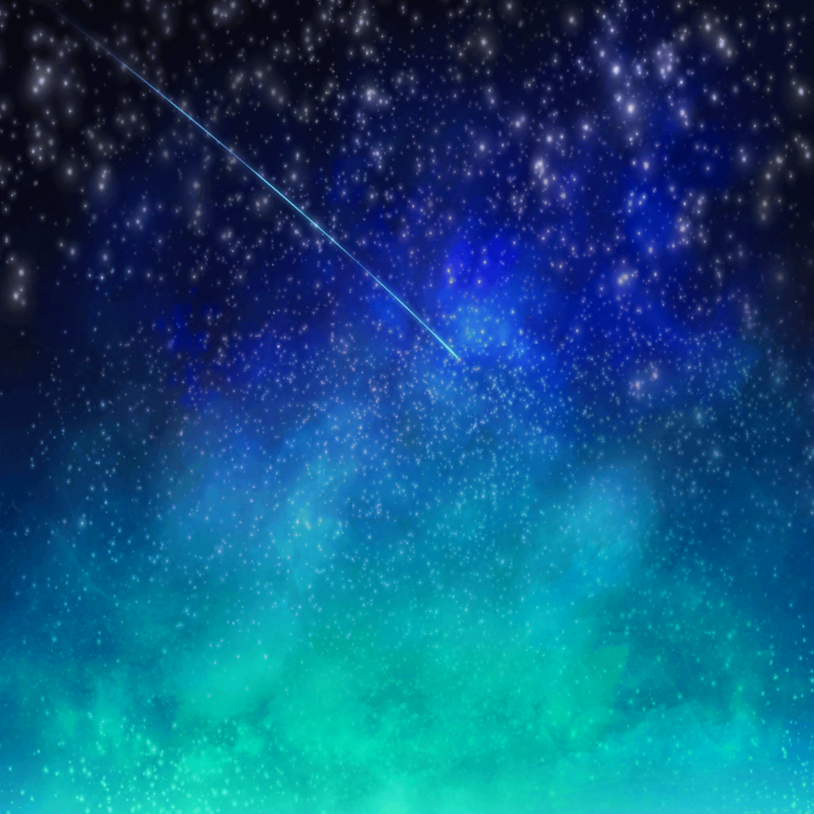
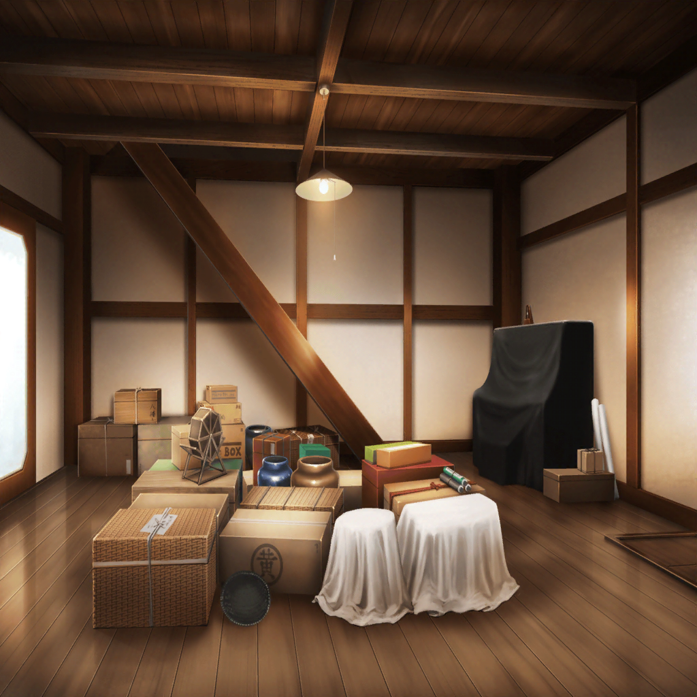

SPACEライブ当日
SPACE ステージ
りみ
もうすぐ出番だね……！
うう、緊張してきた〜！
たえ
有咲？ 袖から何見てるの？
有咲
いや、ばあちゃん来てるかなーと思って……
香澄
えっ、おばあちゃん来てないの？
有咲
や、ばっちり来てる。
うう、来てたら来たですっげー緊張する
沙綾
あはは、うちも家族が観に来てるんだ。
純と紗南、すっごく楽しみって言ってた
香澄
うちもお母さんとあっちゃんが来てるよ！
たえ
クラスの子もたくさん観に来てる。
あ、はぐみとイヴもいるよ
ひなこ
いえーい！ ポピパ、フゥーーー！！
香澄
わあ！ ひなちゃん先輩！
ひなこ
緊張してるのか〜い！
ゆり
大丈夫、うまくいくよ。
みんなでいいライブにしよう
オーナー
なんだい、ここまで来て、怖気付いてるのかい？
香澄
オーナー！
オーナー
私が認めたバンドなんだ。胸張って行きな！
香澄
はい！
りみ
あ！ CHiSPA終わったよ！
夏希
はあ……終わった
香澄
おつかれー、なっちゃん！
夏希
あはは、ありがと
沙綾
おつかれ、ナツ
夏希
うん、沙綾もがんばってね！
うちらがしっかり会場温めといたから！
沙綾
だね！ お客さん、すっごく楽しそう！
香澄
よーし、円陣やろ！
有咲
忘れてんのかと思った
香澄
えへへ、忘れてないよー
りみ
がんばろうね……！
沙綾
もうやるしかない！
たえ
ポピパパピポパ〜！
香澄・りみ・有咲・沙綾
え？？
たえ
……ふふ、ポピパの円陣思いついちゃった
有咲
今かよ〜！？
香澄
なになに？ どういうの？
たえ
ええとね……ごにょごにょ
沙綾
あはは……かわいい！
有咲
それ気合い入る？
たえ
ばっちり
香澄
よーし、じゃあいくよ！
Poppin'Party
ポピパ！ ピポパ！
ポピパパピポパ〜〜〜！！

香澄
せーの
Poppin'Party
Poppin'Partyです！
香澄
ありがとうございます！
初めましての人は初めまして！
香澄
ギターボーカル、戸山香澄です
たえ
リードギター、花園たえです
りみ
ベース、牛込りみです
沙綾
ドラム、山吹沙綾です
有咲
キーボード、市ヶ谷有咲です
香澄
バンドを始めてだいたい２ヶ月です！
沙綾
え？
香澄
え？ あれ？ 違った？
沙綾
５人集まったのはそうだけど、もっと前からじゃん？
たえ
クライブより前？
有咲
香澄がバンドバンド言い出したの
４月の終わりだから約３ヶ月じゃね？
香澄
そうか〜！ ３ヶ月くらいです！
りみ
香澄ちゃんが私達を誘ってくれたんです
有咲
引きずりこまれたっていうか
香澄
えっ
沙綾
うん、あれはねー
香澄
ええっ！？
沙綾
うそ！
香澄
うそー！？ びっくりしたー
沙綾
……ずっとバンドやりたかった
りみ
私も……きっと叶わないって思ってた
有咲
無理かなって思う時もあったけどねー
たえ
でも今、みんなで立ってる
香澄
……うん。
絶対ここでライブしたい……その夢が叶いました！
香澄
今日は、ここにいるみんなで最高にキラキラドキドキしたいです！
よろしくお願いします！
沙綾・りみ・有咲・たえ
よろしくお願いします！
香澄
聞いてください。『夢みるSunflower』
沙綾
（ステージの上から星、見えたね、香澄……）

香澄
……あのね、ずっと考えてたんだけど、
さーやも一緒に文化祭で歌わない？
沙綾
え……？
香澄
文化祭、一回だけでも。
バンドに入るとかじゃなくていいから、
さーやと一緒に歌いたい！
沙綾
……すっごく楽しそう
香澄
うん！ 絶対に楽しいよ！
沙綾
……そうだね。
文化祭はわかんないけど、でも……
沙綾
いつか、いつかね
たえ
（今、すっごく楽しい。
みんなとこのステージに立ててすっごく嬉しい）

香澄
どうだった、おたえ？ ドキドキした？
SPACEに立てるくらい演奏上手くなったかな？
たえ
ううん、演奏はまだまだ全然
香澄
ええっ！？
たえ
でも、気持ちは伝わってきたよ。
バンドと音楽と本気で向き合ってるって……
たえ
だからかな。みんな、すごく輝いてた。
一緒に演奏してるうちに震えちゃうくらい
りみ
（ずっとステージに立つのが、みんなの前に立つのが怖かった。
でも、もう怖くない。ポピパのみんなと一緒だから……！）
りみ
（香澄ちゃん、有咲ちゃん……
私、このまま何もできないままでいいの……？）
りみ
（かっこ悪くても、間違えても……
私が今、できることしなくちゃ……
香澄ちゃんも有咲ちゃんもがんばってるんだから！）
有咲
（ちょっと前の私なら、こんなステージで
自分がライブするなんて、夢にも思わなかっただろうな……）
有咲
（けど、こういうのも悪くない気分……）

香澄
ね、ピアノやってた時、キラキラドキドキしてた？
有咲
なんだよ、キラキラって……
まあ、それなりに楽しかったけど……
香澄
だったら、もう一回やってみようよ！
バンドにはキーボードのパートもあるんだって！
香澄
私、有咲とキラキラドキドキしたい！
バンド、一緒にやろう！ 絶対楽しいよ！
香澄
（すごい……！ すごいすごい！ 星の海だ……！）
香澄
（グリグリのライブで見た星空みたいなペンライトの光……
ステージの上からだと、こんなふうに見えるんだ……！）
香澄
（バンド始めてよかった！ みんなに会えてよかった！
今、私、キラキラドキドキしてる……！ できてるよ……！！）
香澄
せーの
Poppin'Party
ありがとうございました！
Poppin'Party
私達、Poppin'Partyです！
香澄
絶対またライブします！